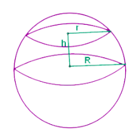

SPHERICAL SEGMENT FORMULA:
If we cut a basketball with a pair of two knives parallely, then the solid that
is defined by the cutting is the spherical segment.
You can say that the spherical cap has been truncated, and so it can be called
as a spherical frustum.
Those spherical segment is called spherical zone, where we exclude the bases.
The formula that we use here are volume and surface area:
A=2πRh

V=πh/6(3r1^2+r2^2+h2)